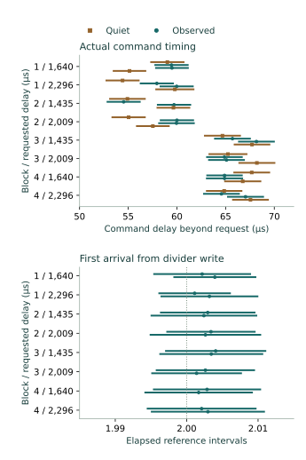

Question and rationale
The preceding divider-write experiment found changed alignment after unchanged-value writes, with read controls retaining the earlier cadence. It also retained a quiet/observed count difference at B. Those two conditions had different command delays from the write, so the count difference could not isolate observation activity.
This experiment schedules acquisition from the recorded divider-write access itself. Repeated quiet and observed windows share requested delays at two positions within each measured cadence. The purpose is predictable local timing control for coordinating state establishment and observation toward physical Seigsit creation and transfer.
Method
Retain A=0x00ffff00 and B=0x00dfff00 in A–B–B–A order, internal input 4, converter enable, queue control and clock settings. Each condition observes a four-millisecond reference, stops, requires readiness and drains locally to empty. A six-access intervention reads converter control, waits 200 µs, performs an exact-prior guarded write of the existing divider and checks divider, readiness and empty/error-clear queue.
The new SEIGRASM entry calculates the deadline from that write access's end plus the declared delay, rounded upward to counter ticks. The access bracket includes the guard read, write and readback; its end is the scheduling origin, not an exact timestamp of the electrical write edge. Counter-only waiting precedes the acquisition routine, which prepares its report, checks the queue and issues the command. Actual command timing is retained separately.
| Setting | Earlier | Later |
|---|---|---|
| A | 1,640 µs | 2,296 µs |
| B | 1,435 µs | 2,009 µs |
These delays approximate 1.25 and 1.75 periods using preceding nominal spacings of 1,312 and 1,148 µs. They select separated positions within a cycle; each new reference supplies the measured spacing bounds for assessment.
Blocks 1 and 3 contain a no-command control at the earlier delay; quiet, observed, observed, quiet continuous windows at each delay; and a single-command control at the later delay. Blocks 2 and 4 reverse that order. Total: forty conditions, including sixteen quiet continuous, sixteen observed continuous and eight controls. Each restart window lasts four milliseconds. No SD persistence occurs between reference acquisition and restart stopping, and no queue consumption occurs inside either window. A stopped recovery and two-millisecond stopped check follow; final cleanup restores the entry settings.
Assessment criteria
Execution acceptance requires complete records, admitted controls, performed unchanged-value writes, correct write-relative deadlines, commands after the deadline, valid recovery, zero/one-entry controls and restoration. Count agreement or a particular timing model is not an acceptance requirement.
Compare quiet and observed command-delay intervals within each setting/delay, retaining any non-overlap. Compare first-arrival brackets with integer continuations of the immediately preceding reference period from the write-access bracket, and separately from the preceding arrival. For continuous windows, count arrivals definitely after command completion and before the window deadline, and those possibly after command start and before stop completion. This model is conditional on recurring spacing from the write; it does not observe arrivals inside quiet windows.
Preparation and implementation
Candidate B0CCA89298AE adds a 124-word literal SEIGRASM entry at byte 3464, preserving the earlier RP1 entries and all seven other instruction streams. The 450-cell report retains reference, local recovery, intervention and restart observations. Header cell 18 identifies write-relative scheduling; cells 4–5 preserve the older arrival bracket; cell 6 records the chosen deadline after admission.
All 58 image-bound supplied-response checks passed. The 277-operation schedule permits at most 2,969 records. Both installation readbacks matched. The frozen protocol defines the sequence, failure behavior and three-minute procedure.
PC tools package the literal opcodes and decode the journal. ROM/EEPROM entry, AArch64 execution and counter, SD and PCIe/RP1 interfaces, retained bridge configuration, RP1 xosc and existing component firmware state remain apparatus dependencies. The acquisition sequence makes no firmware-service request.
Results
All 2,969 records, 277 operations and forty conditions completed with accepted execution. Every condition recorded one divider write, with preceding, requested and immediate returned values equal. All subsequent divider, readiness and queue checks passed.
All sixteen quiet and sixteen observed continuous acquisitions recovered the counts specified by the conditional timing model. All sixteen adjacent quiet/observed comparisons agreed in count, including both orderings and both blocks at each setting. A retained three entries at either delay. B retained three at the earlier delay and four at the later delay.
| Setting / delay | Quiet counts | Observed counts |
|---|---|---|
| A / 1,640 µs | 3, 3, 3, 3 | 3, 3, 3, 3 |
| A / 2,296 µs | 3, 3, 3, 3 | 3, 3, 3, 3 |
| B / 1,435 µs | 3, 3, 3, 3 | 3, 3, 3, 3 |
| B / 2,009 µs | 4, 4, 4, 4 | 4, 4, 4, 4 |
All sixteen observed continuous first arrivals were compatible with the second interval from their divider write. None was compatible with continuation of the earlier reference-arrival alignment. Conditional definite and possible counts coincided and matched recovery in all 32 continuous windows. This extends the preceding write-related alignment finding to another boot with a different scheduling rule.

Deadline precision and command preparation
The deadline was reconstructed correctly in all forty conditions. The counter wait ended 0–38 ticks after its target (0–0.704 µs). However, the continuous command began 52.685–65.944 µs after wait completion. Including the write and command access brackets, actual delay exceeded the requested delay by 52.759–70.019 µs.
The instruction path places acquisition-report initialization, initial queue admission and shared-access setup after the wait. Their combined interval is recorded; this experiment does not isolate how much each operation or bus transaction contributes. Later blocks had longer command-delay bounds. No cause is assigned to that change.
Thirteen of sixteen adjacent quiet/observed command-delay pairs overlapped. Three were separated: block 1 at 1,640 µs by 59 ticks (1.093 µs), block 1 at 2,296 µs by eleven ticks (0.204 µs), and block 2 at 2,009 µs by 88 ticks (1.630 µs). In each of these pairs the observed command-delay interval was later. Their counts still agreed. Requested timing was matched; exact realized timing was not identical in every pair.
Observed continuous first-arrival latency after the command was 916.389–928.074 µs at A's earlier delay and 259.185–272.889 µs at its later delay. At B it was 792.019–810.852 and 219.056–231.278 µs respectively. The shorter latency at the later position agrees with initiation closer to the next recurring arrival.
Retained spacing
All 128 later-spacing brackets retained a common interval within their block. Each interval overlaps the corresponding setting's preceding divider-write result. All four B/A comparisons include 0.875 and exclude 1. These compatibility intervals are not confidence intervals.
| Block / setting | Brackets | Ticks | Spacing, µs |
|---|---|---|---|
| 1 / A | 29 | 70,710–70,868 | 1,309.444–1,312.370 |
| 2 / B | 37 | 61,855–62,020 | 1,145.463–1,148.519 |
| 3 / B | 34 | 61,830–62,038 | 1,145.000–1,148.852 |
| 4 / A | 28 | 70,686–70,875 | 1,309.000–1,312.500 |
Controls and restoration
All four no-command controls were empty and all four single-command controls retained one entry. All eighty reference/restart recoveries finished empty, without overflow, underflow or per-entry error. No observation capacity was exhausted. Stopped checks retained empty/ready state, and final cleanup recovered zero entries.
Reference windows retained three entries in 28 conditions and four in twelve. The 240 raw recovered codes ranged from 846 to 864, with no calibrated temperature or voltage interpretation. Intervention waits measured 200.204–200.667 µs.
Converter, queue, divider and clock control returned to 0, 0x100, 0 and 0 respectively. Recorded route and clock observations agreed before and after access. The coordinator interval was 116.548366 seconds, excluding boot loading and the terminal record's final persistence. Elapsed-time conversions use the reported 54 MHz frequency; it was not independently calibrated. These controls do not establish exclusive component ownership.
Interpretation and next investigation
Inference: SEIGRASM can use an unchanged divider write to position acquisition within the observed local cadence under these conditions. The first-arrival alignment and all continuous counts follow the declared timing model, including windows without status polling. The count disagreement from the preceding unmatched pair did not recur under this schedule. Equal counts do not prove polling has no effect on exact timing or on unobserved internal activity.
The remaining measured precision issue is the preparation interval after the deadline wait. The next proposed change should prepare the acquisition report and context before waiting, place the deadline check close to the guarded command write, and preserve timestamps for each boundary. Retain these same two delays, observation modes, controls and restoration so the effect of moving preparation can be measured. Any required guard must still be completed and failures must refuse the command. This targets a located interval in the executed instruction path, rather than adding an unexplained delay.
Only one boot has tested this exact scheduling rule. The two divider-write investigations support recurrence of write-related alignment, while internal phase, independent analog freshness, calibrated state establishment and physical Seigsit transfer remain unresolved. Timing control supplies a component capability for that development; it does not substitute for the complete physical relation.
Evidence and provenance
Two read-only 64 MiB captures agreed exactly. Capture SHA-256: 663431f8ed1d753a202ffa18cfc3adc7e5304ba29dc4ef0eb42b846a170deab5. Prepared-image SHA-256: 9c08bc526c6ea227e691dced4d10448edd77399f107c00e8f35f6d77c5355181.
Independent reconstruction checks sector identity, ordinal, senary fields, padding and integrity; all unused reservations; raw intervention and timing reports; the write-relative deadlines; first-arrival compatibility; conditional count bounds; and the three non-overlapping command-delay pairs. The partition table and both boot files were unchanged. Seven boot-volume sectors outside the journal differ, including a System Volume Information directory; their writer and timing are not established. Actual powered duration and boot count were not separately reported.